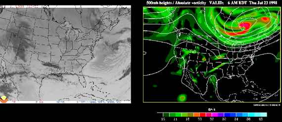
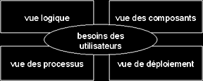

|
|
|

q
Qu'est-ce qu'un modèle ?
- Un modèle est une abstraction de la réalité
L'abstraction est un des piliers de l'approche objet.
- Il s'agit d'un processus qui consiste à identifier les caractéristiques intéressantes d'une entité, en vue d'une utilisation précise.
- L'abstraction désigne aussi le résultat de ce processus, c'est-à-dire l'ensemble des caractéristiques essentielles d'une entité, retenues par un observateur.
- Un modèle est une vue subjective mais pertinente de la réalité
- Un modèle définit une frontière entre la réalité et la perspective de l'observateur. Ce n'est pas "la réalité", mais une vue très subjective de la réalité.
- Bien qu'un modèle ne représente pas une réalité absolue, un modèle reflète des aspects importants de la réalité, il en donne donc une vue juste et pertinente.
- Quelques exemples de modèles
- Modèle météorologique :
à partir de données d'observation (satellite ...), permet de prévoir les conditions climatiques pour les jours à venir.- Modèle économique :
peut par exemple permettre de simuler l'évolution de cours boursiers en fonction d'hypothèses macro-économiques (évolution du chômage, taux de croissance...).- Modèle démographique :
définit la composition d'un panel d'une population et son comportement, dans le but de fiabiliser des études statistiques, d'augmenter l'impact de démarches commerciales, etc...
- Caractéristiques fondamentales des modèles
Le caractère abstrait d'un modèle doit notamment permettre :
- de faciliter la compréhension du système étudié
> Un modèle réduit la complexité du système étudié.- de simuler le système étudié
> Un modèle représente le système étudié et reproduit ses comportements.Un modèle réduit (décompose) la réalité, dans le but de disposer d'éléments de travail exploitables par des moyens mathématiques ou informatiques :
modèle / réalité ~ digital / analogique
q Comment modéliser avec UML ?
- UML est un langage qui permet de représenter des modèles, mais il ne définit pas le processus d'élaboration des modèles !
- Cependant, dans le cadre de la modélisation d'une application informatique, les auteurs d'UML préconisent d'utiliser une démarche :
- itérative et incrémentale,
- guidée par les besoins des utilisateurs du système,
- centrée sur l'architecture logicielle.
D'après les auteurs d'UML, un processus de développement qui possède ces qualités devrait favoriser la réussite d'un projet.
q Une démarche itérative et incrémentale ?
- L'idée est simple : pour modéliser (comprendre et représenter) un système complexe, il vaut mieux s'y prendre en plusieurs fois, en affinant son analyse par étapes.
- Cette démarche devrait aussi s'appliquer au cycle de développement dans son ensemble, en favorisant le prototypage.
Le but est de mieux maîtriser la part d'inconnu et d'incertitudes qui caractérisent les systèmes complexes.
q Une démarche pilotée par les besoins des utilisateurs ?
- Avec UML, ce sont les utilisateurs qui guident la définition des modèles :
- Le périmètre du système à modéliser est défini par les besoins des utilisateurs (les utilisateurs définissent ce que doit être le système).
- Le but du système à modéliser est de répondre aux besoins de ses utilisateurs (les utilisateurs sont les clients du système).
- Les besoins des utilisateurs servent aussi de fil rouge, tout au long du cycle de développement (itératif et incrémental) :
- A chaque itération de la phase d'analyse, on clarifie, affine et valide les besoins des utilisateurs.
- A chaque itération de la phase de conception et de réalisation, on veille à la prise en compte des besoins des utilisateurs.
- A chaque itération de la phase de test, on vérifie que les besoins des utilisateurs sont satisfaits.
q Une démarche centrée sur l'architecture ?
- Une architecture adaptée est la clé de voûte du succès d'un développement.
Elle décrit des choix stratégiques qui déterminent en grande partie les qualités du logiciel (adaptabilité, performances, fiabilité...).
- Ph. Kruchten propose différentes perspectives, indépendantes et complémentaires, qui permettent de définir un modèle d'architecture (publication IEEE, 1995).
Cette vue ("4+1") a fortement inspiré UML :

|
|
|